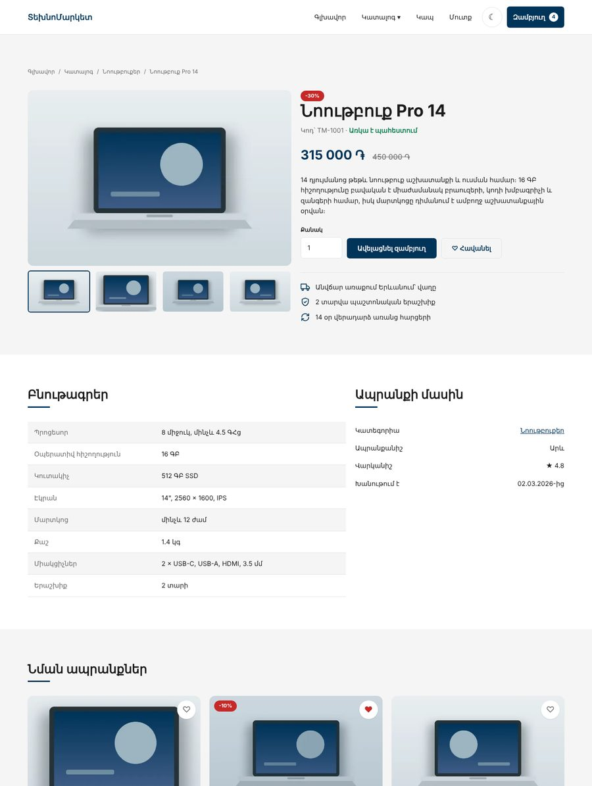

Բլոկ 2-ի նախագիծ · JS Դաս 15–24
ՏեխնոՄարկետ · կենդանի խանութ
Բլոկ 1-ում կառուցեցիր 9 էջանոց ստատիկ խանութ։ Բլոկ 2-ում այն նույն HTML-ով և CSS-ով կենդանանում է․ ֆիլտրում է, հաշվում, հիշում, ստուգում և տվյալներ է բերում «սերվերից»։ Նախագիծը բաժանված է երեք առաջադրանքի, որոնք գալիս են դասերի հետ, և ավարտվում է պաշտպանությամբ Դաս 24-ում։
00Ինչպես աշխատել այս թղթապանակի հետ
Աշխատում ես քո Բլոկ 1-ի նախագծի վրա․ HTML-ը և CSS-ը արդեն քոնն են, հիմա նրանց ավելանում է JS։ Օրինակը բացիր միայն ստուգաթերթն անցնելուց հետո։
Օրինակ 2-ը օգտագործում է մոդուլներ և fetch, ուստի բացիր այն Live Server-ով (JS Դաս 18), ոչ ֆայլից։
01Երեք քայլ
| Երբ | Առաջադրանք | Օրինակ | Ինչ է ավելանում |
|---|---|---|---|
| Դաս 15–16 | task-1.html | example-1-catalog-cart | Կատալոգի ֆիլտրեր, որոնում, էջավորում, զամբյուղ localStorage-ով, «Ավելացվեց» մոդալ, header-ի թիվ |
| Դաս 17–18 | task-2.html | example-2-final | Git և Pages, ES մոդուլներ, ապրանքի էջ ?id=-ով, պատկերասրահ, բուրգեր, թեմա, ֆորմաների ստուգում, պատվեր |
| Դաս 19–23 → 24 | task-3.html | example-2-final | products.json և API շերտ, երեք վիճակ, Cart և Wishlist դասեր, Set/Map, ValidationError, պաշտպանություն |
02Ինչպես է այն կապված դասերի հետ
| Դաս | Դասի թեման | Նախագծում |
|---|---|---|
| 15 | Կատալոգ՝ վիճակ, pipeline, render | catalog.html-ը Բլոկ 1-ի markup-ով |
| 16 | Զամբյուղ, ռեֆակտորինգ, DevTools | cart.js, cart.html, checkout-ի ամփոփում |
| 17 | Git և GitHub | Պահոց, ճյուղեր, Pages |
| 18 | ES մոդուլներ | js/pages/*.js, ui/, կախվածությունների գրաֆ |
| 19 | Promise | Ի՞նչն է դառնում ասինխրոն |
| 20 | fetch, async/await | api.js, երեք վիճակ |
| 21 | API-ների հետ աշխատանք | Քեշ, «Կրկին փորձել», API շերտ |
| 22 | OOP | Cart դաս |
| 23 | Փակույթներ, սխալներ, Set, Map | Wishlist, ֆիլտրեր տվյալներից, ValidationError |
| 24 | Ամփոփում | Պաշտպանություն |
Ամեն առաջադրանք օգտագործում է միայն այն, ինչ անցել ենք մինչև այդ դասը։ Առաջադրանք 1-ում չկան մոդուլներ և fetch, Առաջադրանք 2-ում չկան դասեր։ Միակ բացառությունը՝ URLSearchParams-ը, որը տրված է որպես հուշում Դաս 15-ի տնայինում։
03Ինչ է ուղղվում Բլոկ 1-ի README-ից
| Բլոկ 1-ի սահմանափակում | Որտեղ է ուղղվում |
|---|---|
| Ֆիլտրերը, դասավորումը և էջավորումը փոխում են միայն հասցեն | Առաջադրանք 1 |
| Զամբյուղի քանակը և «Հեռացնել»-ը չեն փոխում գումարները | Առաջադրանք 1 |
| Բուրգերը չի փակվում Esc-ով և հղման սեղմելիս | Առաջադրանք 2 |
| Պատկերասրահի փոքր նկարները սեղմելի չեն | Առաջադրանք 2 |
| Մուգ թեման հետևում է միայն համակարգին | Առաջադրանք 2 |
| HTML-ը չի կարող համեմատել երկու գաղտնաբառ | Առաջադրանք 2 (հարմարություն), PHP Դաս 16 (պաշտպանություն) |
| Պատվերի ֆորման ուղարկվում է GET-ով | Առաջադրանք 2-ում այլևս չի ուղարկվում հասցեով, իսկական ուղարկումը՝ PHP բլոկում |
| Header-ը կրկնվում է 9 էջում | Մնում է․ կլուծվի PHP-ի layout-ով (PHP Դաս 15) |
04Վերջնական արդյունքը


Պաշտպանության կարգը և գնահատումը՝ Առաջադրանք 3, բաժին 06։